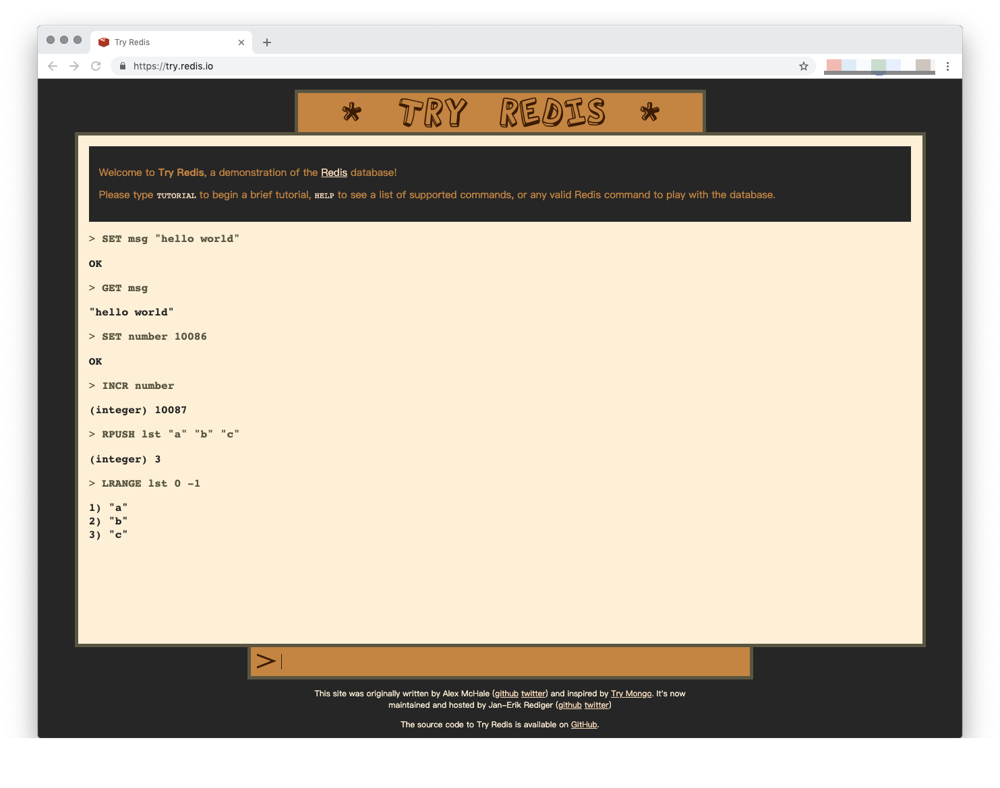

附录 A ：Redis 安装方法¶
本附录将介绍在不同操作系统上安装 Redis 服务器及其内置客户端的具体方法。
为了保证获得最新版本的 Redis 服务器，我们将通过编译方式安装 Redis 。
免安装试运行¶
试用 Redis 最简单的方法就是访问 Try Redis 网站： https://try.redis.io/ 。
Try Redis 可以在线执行大部分 Redis 数据操作命令，并提供了一个简单的 Redis 教程可供阅读。
当你想要快速测试某个 Redis 数据操作命令，但是身边又没有安装了 Redis 的机器可供使用的话，那么不妨尝试一下 Try Redis 。
在 macOS 上安装¶
为了在 macOS 上编译并安装 Redis ， 我们需要先安装 make 、GCC 和 Git 等一系列开发工具， 这一点可以通过执行以下命令完成：
$ xcode-select --install
在安装完开发工具之后， 我们需要通过执行以下命令， 获取最新版本的 Redis 项目源码：
$ git clone https://github.com/antirez/redis.git
在克隆完项目之后， 我们需要进入项目目录并编译源码：
$ cd redis
$ make
为了保证编译完成的 Redis 程序运作正常， 我们可以继续执行 Redis 附带的测试程序：
$ make test
在测试顺利结束之后， 我们就可以进入源码目录， 并通过执行以下命令启动 Redis 服务器：
$ cd src/
$ ./redis-server
又或者通过执行以下命令启动 Redis 客户端：
$ ./redis-cli
在 Linux 上安装¶
在 Ubuntu 等基于 Debian 的 Linux 系统上， 我们可以通过执行以下命令安装编译 Redis 所需的工具：
$ sudo apt install gcc make git
接着克隆项目：
$ git clone https://github.com/antirez/redis.git
然后编译并测试：
$ cd redis
$ make
$ make test
最后启动服务器：
$ cd /src
$ ./redis-server
还有客户端：
$ ./redis-cli
在 Windows 上安装¶
因为 Redis 官方并不支持 Windows 系统， 所以我们只能够通过虚拟机或者 Docker 等手段在 Windows 系统上安装 Redis 。
在决定使用 Docker 的情况下， 我们需要先按照以下文档的指示， 在 Windows 系统中下载并安装 Docker ： https://docs.docker.com/docker-for-windows/install/ 。
在 Docker 安装完毕之后， 我们就可以使用 Windows 自带的 CMD 命令行或是 PowerShell ， 通过执行以下命令拉取最新的 Redis 镜像：
$ docker pull redis:latest
在此之后， 我们可以通过执行以下命令启动 Redis 实例：
$ docker run --name docker_redis -d redis
f9442c418a0ae546ab76699e350bed68f56f53f68fe8c0562432e81e03e95809
最后，
再执行以下命令，
我们就可以启动 redis-cli 客户端并向 Redis 实例发送命令请求了：
$ docker exec -it f9442c418a0a redis-cli
127.0.0.1:6379> PING
PONG
关于 Redis Docker 镜像的更多信息请参考该镜像的文档： https://hub.docker.com/_/redis/ 。